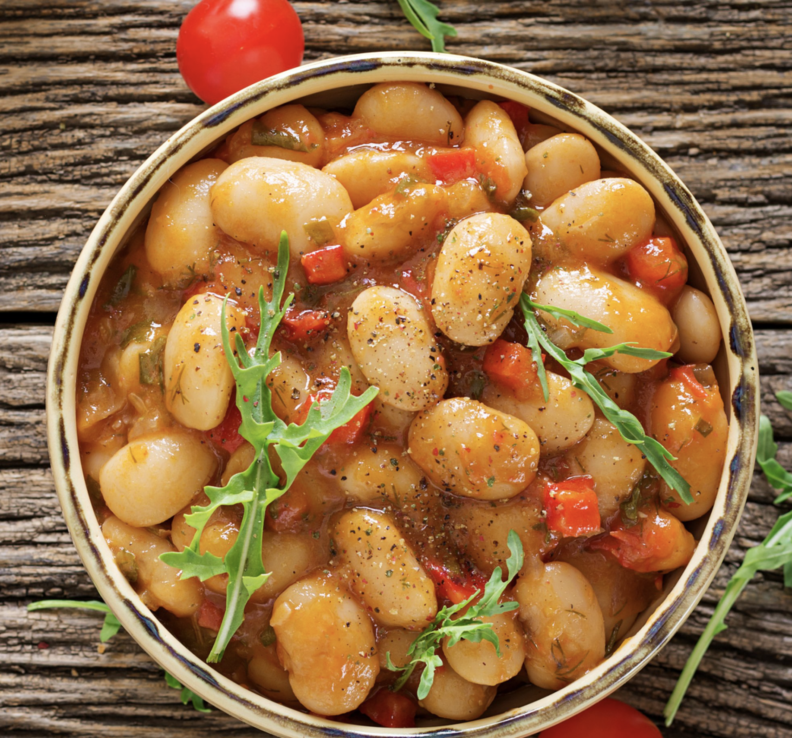

приготовление:
-
Почистить 2 средние моркови и натереть на крупной тёрке. Разогреть сковороду с оливковым маслом.
-
Добавить морковь и обжаривать на среднем или чуть более сильном огне 4 минуты.
-
Вымыть 1 жёлтый сладкий перец, удалить плодоножку и семена, мелко нарезать и добавить обжариваться к моркови.
-
Вымыть 1 средний цукини, натереть на крупной тёрке, добавить к моркови и обжаривать всё вместе ещё 3–4 минуты.
-
Добавить 175 г томатного соуса для пасты (я беру Loyd Grossman No Added Sugar Tomato & Basil Sauce, половину банки 350 г), соль и чёрный перец. Вместо соли иногда можно использовать 1 ст. л. соуса тамари.
-
По желанию добавить 1/2 ч. л. хлопьев чили, копчёный чеснок, копчёную паприку или другие любимые специи. Перемешать и тушить 3–4 минуты.
-
Слить жидкость из 1 банки крупной фасоли (я использую Bold Bean Co Queen Butter Beans, 570 г). Добавить фасоль к овощам, перемешать и тушить ещё 3–4 минуты, чтобы она хорошо прогрелась.